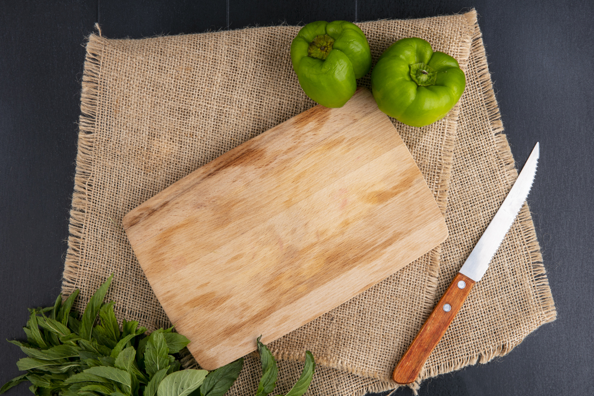
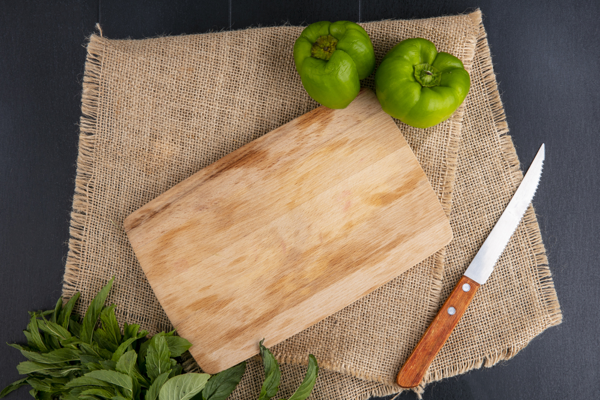

Take A Look Around
Need a little inspiration? Our gallery is packed with photos of past projects to spark ideas. We have created everything from custom cutting boards and engraved kitchen utensils to nursery name signs, anniversary plaques, wedding table numbers, quirky quote signs, and even wooden business logos. There is no one-size-fits-all style here. We have done clean and modern, playful and bright—you name it. Every piece reflects the personality and vision of the person it was made for.
What We Can Make
We build wood decor for homes, events, and gift-giving. Looking for a sign with your favorite quote? A custom name sign for your babys room? A plaque with your anniversary date or your pets name? Maybe a meaningful housewarming or wedding gift? We can do it all—and we are always up for trying something new. If you have seen something you love on Pinterest or social media and want to put your own spin on it, we are all ears. We are here to make your idea happen, no matter how simple or detailed.
One-of-a-Kind Every Time
Every piece we make starts with you. You choose the words, the colors, the vibe—and we make it happen. We don not use templates or mass production methods. What you get is something completely custom, handcrafted from start to finish. No two orders are the same, and that is exactly how we like it.
 
